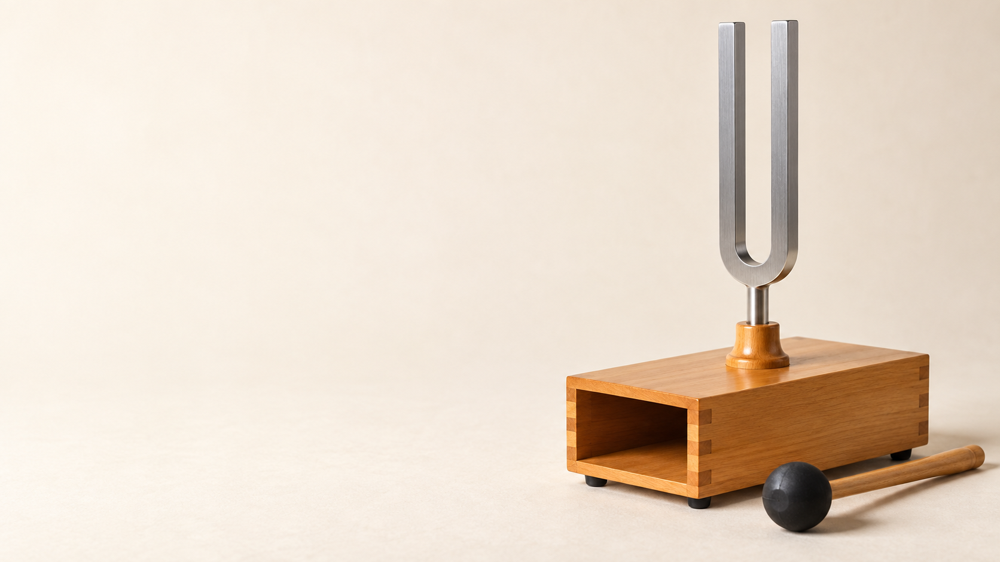

中1 理科・物理
音

中1 理科 音SeeD EDUCATION
音叉は、どうやって音を出す？
音叉をたたく先端に注目しよう
観察結果細かく震えている
覚えること音を出す物体は振動する
中1 理科 音SeeD EDUCATION
音叉の振動を止めると？
振動を止める音も止まる
音を出すもと音源（発音体）
中1 理科 音SeeD EDUCATION
空気が、隣の空気を動かす
音叉の近く空気が押される
隣へ、そのまた隣へ振動が伝わっていく
覚えること音は波として伝わる
中1 理科 音SeeD EDUCATION
粒はその場、波は先へ
空気の粒に注目その場で前後に動く
波を追う混み合う場所が移動する
耳まで届くと鼓膜が振動する
中1 理科 音SeeD EDUCATION
たたいていない音叉も震える
左の音叉をたたく空気に波が伝わる
少しすると右の音叉も震え始める
同じ高さの音叉どうし共鳴
中1 理科 音SeeD EDUCATION
左を止めても、右は続く
左の振動を止める左は静かになる
右に注目しばらく震え続ける
その後少しずつ弱まる
中1 理科 音SeeD EDUCATION
音は、振動が伝わる波
音源振動して音を出す
空気・水・金属など振動を伝える
真空音は伝わらない
中1 理科 音SeeD EDUCATION
動きを記録すると、波形になる
1か所の動きを追う時間とともに記録する
横軸は時間上・下の変化を描く
読み取り方波形で振動を比べる
中1 理科 音SeeD EDUCATION
大きな音は、振れ幅が大きい
同じ速さで比べる振れ幅だけを変える
振れ幅の名前振幅
振幅が大きいほど大きな音
中1 理科 音SeeD EDUCATION
高い音は、振動が速い
同じ時間で比べる振動の回数に注目
速く振動するほど高い音
中1 理科 音SeeD EDUCATION
1秒間に、何回振動する？
往復して元へ戻るこれで1振動
1秒間の振動回数振動数
単位Hz（ヘルツ）
中1 理科 音SeeD EDUCATION
0.005秒で1振動なら？
1振動にかかる時間0.005秒・・・1振動
1秒間では1.000秒・・・200振動
振動数200 Hz
中1 理科 音SeeD EDUCATION
0.02秒で1振動。何Hz？
考え方1 ÷ 0.02
答え50 Hz
中1 理科 音SeeD EDUCATION
モノコードで音を調べよう
震える部分駒と駒の間の弦
変える条件一つずつ変えて比べる
中1 理科 音SeeD EDUCATION
強くはじくと、どうなる？
そろえる条件長さ・太さ・張る力
強くはじくと振幅が大きくなる
音の変化大きな音になる
中1 理科 音SeeD EDUCATION
振動する部分を短くする
そろえる条件太さ・張る力
駒を動かして短くする振動が速くなる
音の変化高い音になる
中1 理科 音SeeD EDUCATION
弦を強く張る
そろえる条件長さ・太さ
おもりを増やす張る力が大きくなる
音の変化高い音になる
中1 理科 音SeeD EDUCATION
細い弦と太い弦を比べる
そろえる条件材質・長さ・張る力
細い弦の方が振動が速い
音の変化細い弦ほど高い音
中1 理科 音SeeD EDUCATION
大きくする？ 高くする？
大きな音にしたい強くはじく
高い音にしたい短く・細く・強く張る
中1 理科 音SeeD EDUCATION
大きさと高さを分けよう
音の大きさ振幅で決まる
音の高さ振動数で決まる
高い音にする条件短い弦・細い弦・強い張り
中1 理科 音SeeD EDUCATION
光が先に届く。音はあとから
雷が光る光が先に目へ届く
3秒後音が耳へ届く
なぜ時間がずれる？光より音の方が遅い
中1 理科 音SeeD EDUCATION
3秒後に聞こえた雷は、何m先？
音の速さを340 m/sとする340 × 3
雷までの距離約1020 m
約何km？約1 km
中1 理科 音SeeD EDUCATION
振動から、耳に届くまで
音の伝わり方音源の振動 → 空気の波 → 耳
大きさと高さ振幅と振動数で比べる
音の速さ光よりゆっくり伝わる
中1 理科 音SeeD EDUCATION